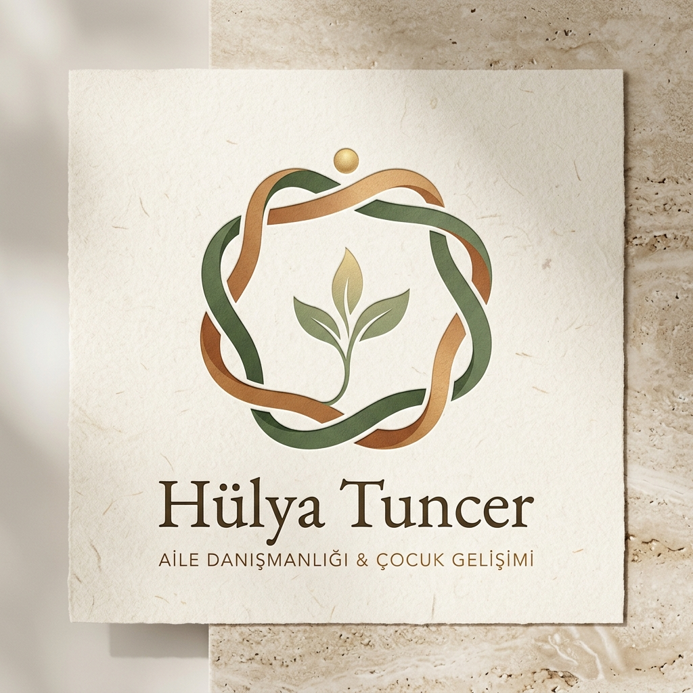
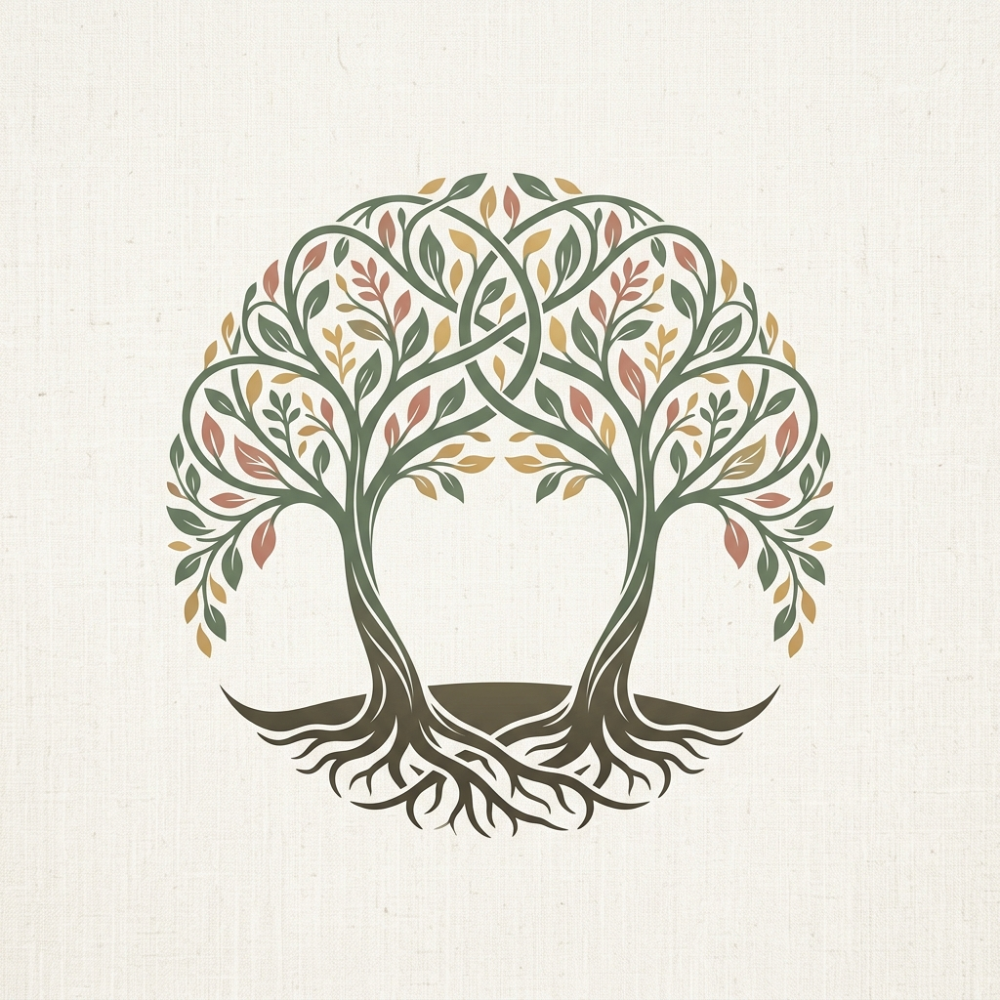
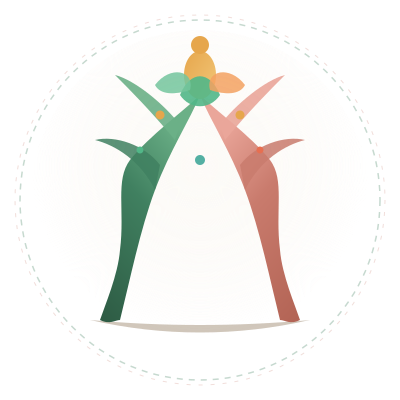
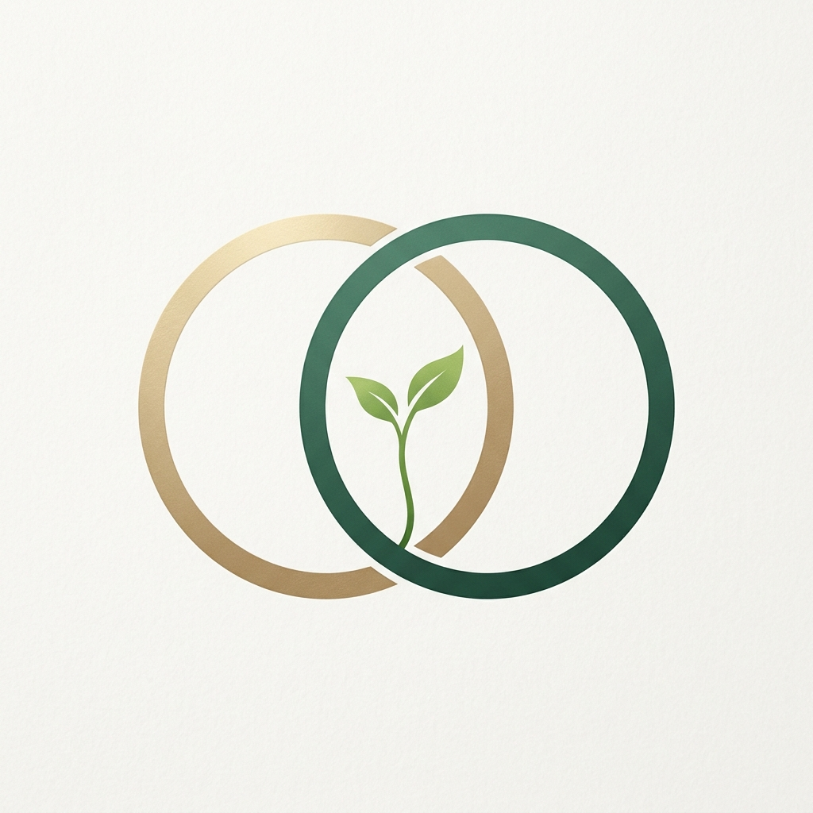
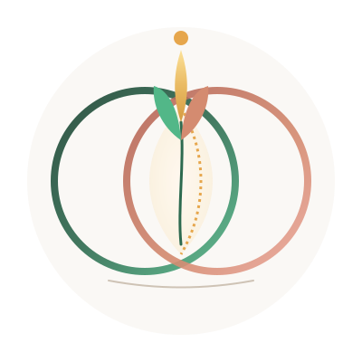
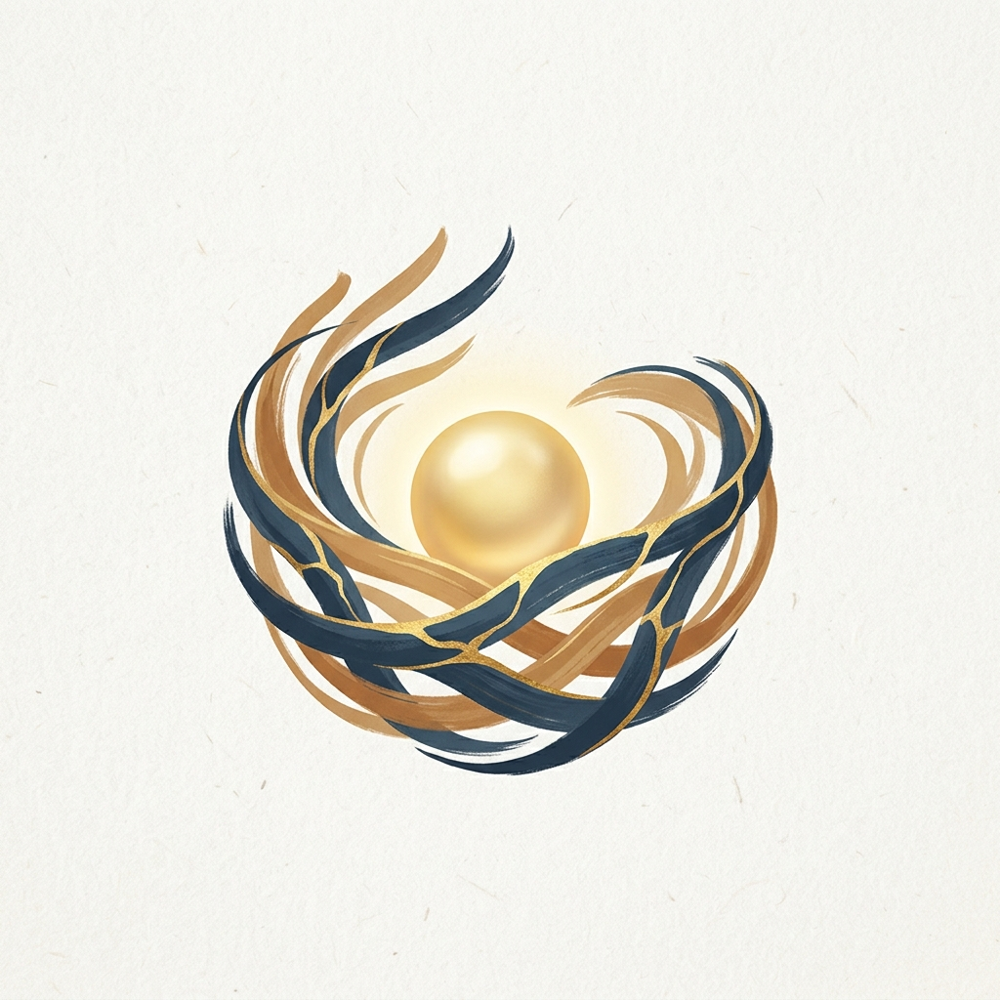
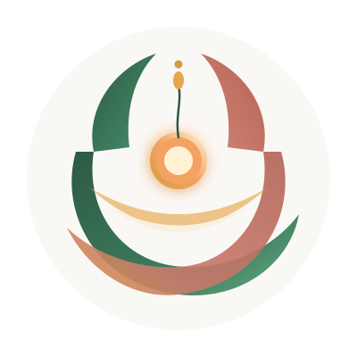
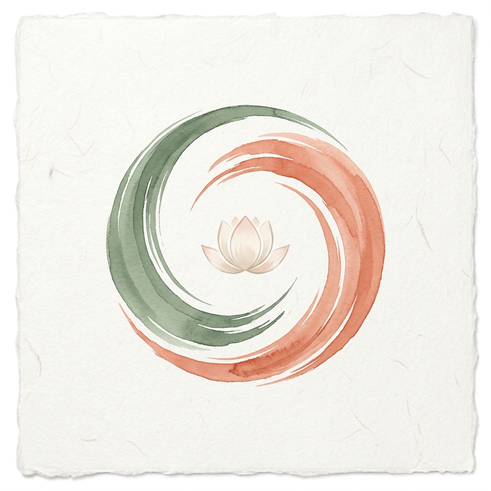
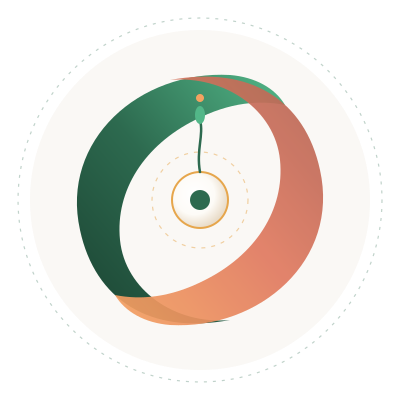

İlişkiler, Ortak Yaşam & İnsan Ruhu İçin
5 Özgün Tasarım Konsepti
Bir aile danışmanı yalnızca geleneksel çekirdek aileyi değil; birlikte büyüyen iki kardeşi, aynı hayatı ve evi paylaşan iki yol arkadaşını, insanın kendi içsel diyaloğunu ve doğayla kurduğu şifa bağını ele alır. Klişe şablonları bir kenara bırakıp, bu çok boyutlu felsefeyi yansıtan 5 bağımsız yaratıcı konsept geliştirdik.
"Hayatın Dokusu"
(The Living Loom of Connection)
“Kendi kökünde özgür, kendi gövdesinde dik; ama aynı gökyüzünde, aynı çatıda bir.”
Klişe insan yüzleri ve kalıplaşmış anne-çocuk figürlerinin tamamen ötesinde soyut ve evrensel bir başyapıt: İki bağımsız organik hat (biri kökleri ve toprağı simgeleyen adaçayı yeşili, diğeri yuvayı ve şefkati simgeleyen sıcak terracotta). Birbirini boğmadan, birbirine nefes ve saygı alanı bırakarak sarılırlar. Ortadaki ferah ortak alandan göğe uzanan canlı üçlü yaşam filizi ve zirvedeki altın bilinç çiyi ile aydınlığı müjdeler.



İlişkiler ve Birlikte Yaşama İçin Diğer Konseptler
Farklı duygusal ve felsefi nüansları işleyen diğer özgün tasarım çalışmaları.
"İki Kök, Tek Gökyüzü"
(Two Entwined Trees & Canopy)
“Ben sen değilim, sen ben değilsin; köklerimiz ayrı, ama gölgemiz ve gökyüzümüz bir.”
İki kardeş veya aynı hayatı paylaşan iki birey... İkisi de kendi ayakları üzerinde durur, kendi bağımsız gövdelerine sahiptir. Ancak yukarı uzandıklarında dalları birbiriyle çatışmaz; birbirini tamamlayan, güneş ışığını paylaşan ve koruyucu bir dairesel taç oluşturan uyumlu bir ekosisteme dönüşür.



Stüdyo Konsept Çizimi

Hassas Vektörel Tasarım (SVG)
"Vesica Piscis & Canlı Filiz"
(The Shared Resonant Space)
“Senin sınırların, benim sınırlarım ve ortada birlikte var ettiğimiz ortak yaşamımız.”
İki bağımsız halka (biri adaçayı yeşili, diğeri sıcak altın-terracotta). İki insan birbirinin içine geçip kimliğini yok etmez; saygıyla kesiştikleri yerde ortak bir yaşam alanı (Vesica Piscis / Mandorla) oluştururlar. İşte tam o ortak paydada taze, yaşayan bir hayat filizi boy verir.



Stüdyo Konsept Çizimi

Hassas Vektörel Tasarım (SVG)
"Organik Yuva & Kintsugi Işığı"
(The Living Sanctuary Nest)
“Kırılan yerlerimizden ışık sızar; sevgiyle örülen yuva iyileştirir.”
Aynı evde veya aynı ailede kırgınlıklar yaşanabilir. Bu konsept; kırıkları altınla onaran Kintsugi felsefesiyle, bireyleri sarıp sarmalayan organik bir kuş yuvasını simgeler. Ortada ışıldayan altın tohum; ailenin veya birlikte yaşayanların yeniden bulduğu huzuru temsil eder.



Stüdyo Konsept Çizimi

Hassas Vektörel Tasarım (SVG)
"Harmonik Dalgalar & Sakin Liman"
(The Dual Zen Streams & Harbor)
“İki farklı dalga boyu, fırtınaları dindirip ortada dingin bir göl kurduğunda hayat başlar.”
Farklı karakterlere, mizaçlara ve geçmişe sahip iki insan (kardeşler, yol arkadaşları veya çiftler). Karşılaştıklarında birbirini yutmak yerine birbirinin fırtınasını dindirirler. Ortada açılan dairesel sakin limanda huzurlu bir nilüfer çiçeği açar.



Stüdyo Konsept Çizimi

Hassas Vektörel Tasarım (SVG)
"Göz Göze Silüetler & Hayat Nehri"
(Facing Silhouettes & River)
“Karşı karşıya, göz göze ve hiyerarşisiz bir empatik temas.”
Karşılıklı iki insan silüeti; ortak hayat yolunu simgeleyen 'S' kıvrımlı nehir üzerinde birbirine bakar. Ortadan göğe yükselen çok yapraklı filiz ve ufukta doğan altın güneş ile umudu temsil eder.


Orijinal Sanat Eseri
Hassas Vektörel Tasarım (SVG)